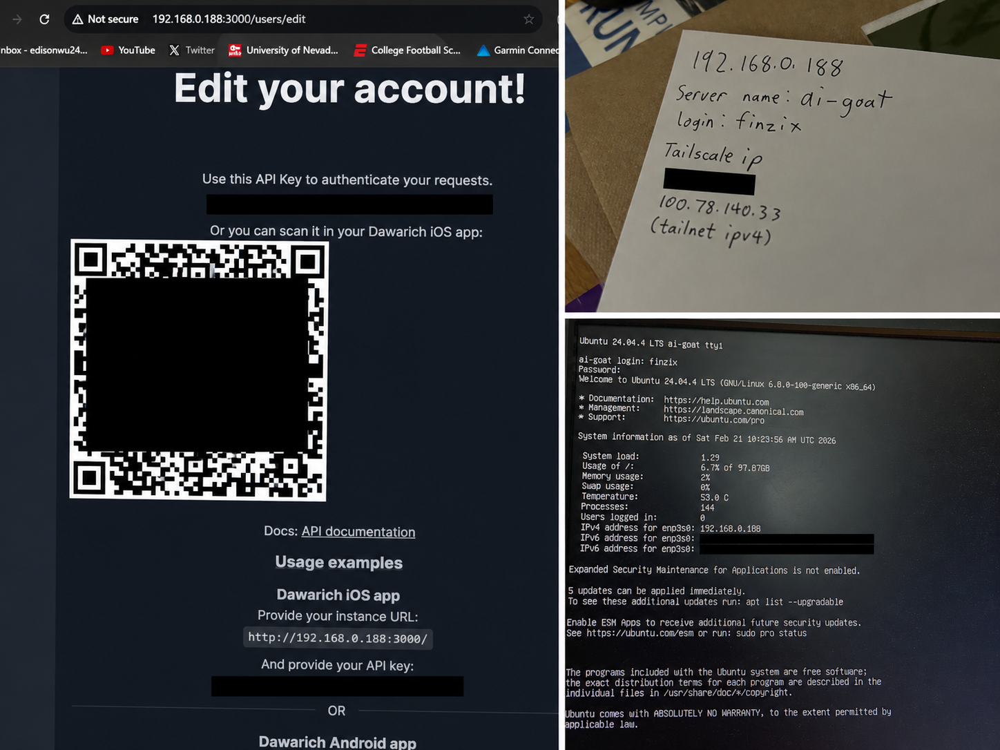

Location AI Server
A self-hosted location tracking and analysis system that stores location history from my phone and allows the data to be queried using a locally hosted AI model.
Goal
Build a private location history system that could eventually be integrated with other personal tools, such as Eddie Calendar, to provide context-aware scheduling and location-based assistance.
System
- Ubuntu server
- Docker
- Dawarich for location history and visualization
- Tailscale for secure remote access
- iPhone location data
- Ollama for local AI queries and summaries
What It Could Do
- Store and visualize location history
- Access the server remotely through a private network
- Query location history using a local AI model
- Generate summaries and observations from stored location data
Why I Built It
The project started as an experiment in self-hosting, personal data, and local AI. I wanted to explore how location history could provide useful context for a future personal assistant without relying entirely on cloud-based services.
Future Ideas
- Integrate location context with Eddie Calendar
- Estimate travel and commute time between events
- Provide reminders based on current location
- Improve automated summaries of location history
- Rebuild and document the server setup
Development Notes
The original server is no longer fully accessible. I lost the server password. It was such a PAIN IN THE BUTT to setup.
Screenshots
